Large shrub or small trees, up to 5 m tall.
ದೊಡ್ಡ ಗಾತ್ರದ ಪೊದೆಗಳು ಅಥವಾ 5 ಮೀ. ಎತ್ತರಕ್ಕೆ ಬೆಳೆಯುವ ಸಣ್ಣ ಮರಗಳು.
5 മീറ്റര് വരെ ഉയരത്തില് വളരുന്ന വലിയ കുറ്റിച്ചെടിയോ ചെറുമരങ്ങളോ.
பெரிய செடி அல்லது சிறிய மரம் 5 மீ. வரை வளரக்கூடியது
Branchlets terete, glabrous.
ಎಳೆಯ ಕಿರುಕೊಂಬೆಗಳು ದುಂಡಾಗಿದ್ದು ರೋಮರಹಿತ ವಾಗಿರುತ್ತವೆ
ഉപശാഖകള് ഉരുതും, അരോമിലവും.
சிறிய நுனிக்கிளைகள் குறுக்குவெட்டுத் தோற்றத்தில் வளையமானது, உரோமங்களற்றது.
Leaves simple, alternate, spiral; stipules triangular, caducous; petiole 0.9-1.3 cm long, canaliculate, glabrous; lamina 8-13 × 4-7 cm, elliptic to obovate, apex shortly acuminate or acute, base cuneate to attenuate, margin serrate or serrulate, coriaceous, glabrous; secondary_nerves 5-7 pairs; tertiary_nerves broadly reticulate.
ಎಲೆಗಳು ಸರಳವಾಗಿದ್ದು ಸುತ್ತು ಜೋಡಣಾ ವ್ಯವಸ್ಥೆ ಯಲ್ಲಿರುತ್ತವೆ;ಕಾವಿನೆಲೆಗಳು ತ್ರಿಕೋನಾಕಾರದಲ್ಲಿದ್ದು ಉದುರಿ ಹೋಗುವ ರೀತಿಯವು;ಎಲೆ ತೊಟ್ಟುಗಳು 0.9 ರಿಂದ 1.3 ಸೆಂ.ಮೀ ಉದ್ದವಿದ್ದುಕಾಲುವೆ ಗೆರೆ ಸಮೇತವಾಗಿರುತ್ತವೆ ಹಾಗೂ ರೋಮರಹಿತವಾಗಿರುತ್ತವೆ; ಎಲೆಪತ್ರಗಳು 8 –13 X 4 - 7 ಸೆಂ.ಮೀ. ಗಾತ್ರ,ಅಂಡವೃತ್ತಾಕಾದಿಂದ ಬುಗುರಿಯಾಕಾರದವರೆಗಿನ ಆಕಾರದಲ್ಲಿದ್ದು, ಕ್ರಮೇಣವಾಗಿ ಕೊಂಚ ಚೂಪಾಗುವ ಅಥವಾ ಚೂಪಾದ ತುದಿ, ಬೆಣೆಯಾಕಾರದ ಅಥವಾಒಳಬಾಗಿದ ತಳವುಳ್ಳ ಬುಡ, ಗರಗಸ ದಂತಿತವಾದ ಅಥವಾ ಸೂಕ್ಷ್ಮ ಗರಗಸ ದಂತಿತವಾದ ಅಂಚು,ತೊಗಲನ್ನೋಲುವ ಮತ್ತು ರೋಮರಹಿತವಾದ ಮೇಲ್ಮೈ ಹೊಂದಿರುತ್ತವೆ;ಎರಡನೇ ದರ್ಜೆಯ 5 ರಿಂದ 7 ಜೋಡಿ ನಾಳಗಳಿದ್ದು, ವಿಶಾಲ ಜಾಲಬಂಧ ವಿನ್ಯಾಸ ಹೊಂದಿದ ಮೂರನೇ ದರ್ಜೆಯ ನಾಳಗಳಿರುತ್ತವೆ.
ഏകാന്തരമായി, വര്ത്തുള ക്രമത്തിലുള്ള ലഘുപത്രങ്ങള്; അനുപര്ണ്ണങ്ങള് ത്രികോണാകാരത്തിലുള്ളത്, വേഗം കൊഴിഞ്ഞ് വീഴുന്നതും; ഇലഞെട്ടിന് 0.9 സെ. മീ. മുതല് 1.3 സെ.മീ വരെ നീളം, ചാലോട് കൂടിയതും, അരോമിലവും; പത്രഫലകത്തിന് 8 സെ.മീ മുതല് 13 സെ.മീ വരെ നീളവും 4 സെ.മീ. മുതല് 7 സെ.മീ വരെ വീതിയും, ദീര്ഘവൃത്താകാരം മുതല് അപഅണ്ഡകാരം വരെയും, ചെറു വാലോട് കൂടിയതോ കൂര്ത്തതോ ആയ പത്രാഗ്രം, ആപ്പാകാരത്തിലുള്ളതോ അകവളവുള്ള അരികോടും സാവധാനം നേര്ത്തവസാനിക്കുന്നതുമായ പത്രാധാരം ആയ പത്രാധാരം, ദന്തിതമോ ദന്തുരമോ ആയ അരികുകള്, ചര്മ്മില പ്രകൃതം, അരോമിലം, 5 മുതല് 7 വരെ ജോഡി ദ്വിതീയ ഞരമ്പുകള്, വീതിയേറിയ ജാലിക തീര്ക്കുന്ന ത്രിതീയ ഞരമ്പുകള്.
இலைகள் தனித்தவை, மாற்றுஅடுக்கமானவை, சுழல் அமைப்பு; இலையடிச்செதில் முக்கோண வடிவமுடையது, உதிரக்கூடியது; இலைக்காம்பு 0.9-1.3 செ.மீ. நீளமானது, குறுக்குவெட்டுத் தோற்றத்தில் கேனாலிகுலேட், உரோமங்களற்றது; இலை அலகு 8.13 X 4-7 செ.மீ., நீள்வட்டம் முதல் தலைகீழ் முட்டை வடிவமுடையது, அலகின் நுனி சிறிய அதிக்கூரியது அல்லது கூரியது, அலகின் தளம் ஆப்பு வடிவம் முதல் அட்டனுவேட், அலகின் விளிம்பு ரம்ப பற்களுடையது அல்லது மிகச்சிறிய ரம்பபற்களுடையது, கோரியேசியஸ், உரோமங்களற்றது; இரண்டாம் நிலை நரம்புகள் 5-7 ஜோடிகள்; மூன்றாம் நிலை நரம்புகள் அகன்ற வலைப்பின்னல் அமைப்பு கொண்டது.
Flowers in clusters on short peduncle in the axils of fallen leaves.
ಹೂಗಳು ಉದುರಿದ ಎಲೆಗಳ ಅಕ್ಷಾಕಂಕುಳಿನಲ್ಲಿನ ವೃಂತದ ಮೇಲೆ ಗುಚ್ಛಾಕಾದಲ್ಲಿರುತ್ತವೆ.
കൊഴിഞ്ഞ ഇലകളുടെ കക്ഷങ്ങളില്, ചെറിയ തുകളിലായി കൂട്ടമായുാകുന്ന പൂക്കള്.
மலர்கள் கொத்தாக சிறு மஞ்சரி காம்புடன் இலைகள் உதிர்ந்த இலைக்கோணப்பகுதியில் தோன்றும்.
Capsule, 3-valved; seeds 6, arillate.
ಸಂಪುಟ ಫಲಗಳು 3 ಕೋಶಗಳ ಸಮೇತವಿರುತ್ತವೆ ;ಬೀಜಗಳು 6, ಹಾಗೂ ಪತ್ರೆ ಸಮೇತವಾಗಿರುತ್ತವೆ.
കായ 3 വാല്വുകളുള്ള കാപ്സ്യൂള് ആണ്; അരില്ലോടുകൂടിയ 6 വിത്തുകള്.
வெடிகனி (கேப்சூல்), 3-அறைகளுடையது; ஆறு விதைகள் கொண்டது, பத்திரி (ஏரிலேட்) உடையது.
 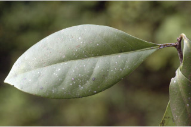
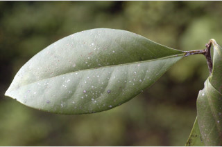
 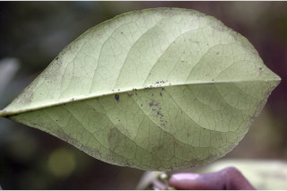
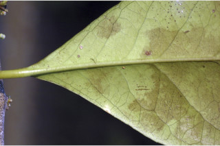
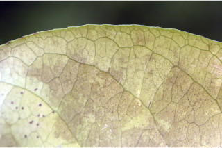
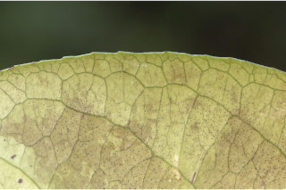
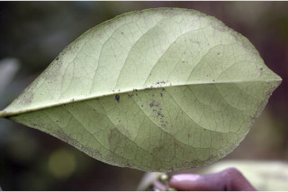
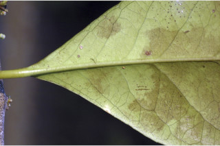
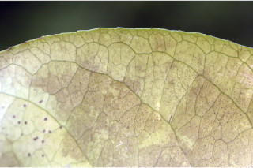
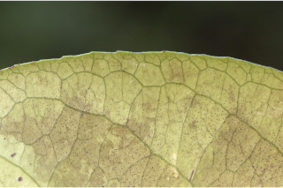
 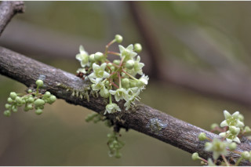
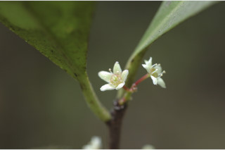
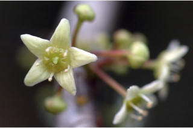
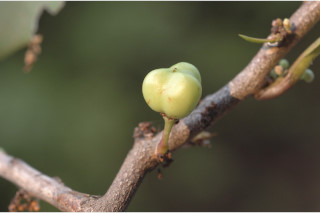
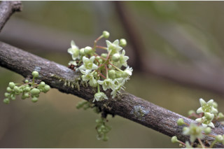
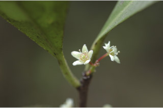
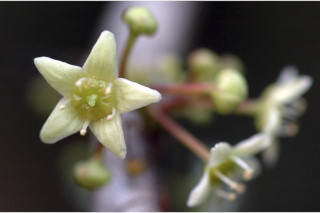
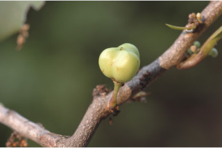